테마 미리보기와 화면 상단
2026-11-22 · iOS 27.2 시뮬레이터 · 영어 · 다크 모드 · 기본 글씨 · 테스트 데이터
S01에서 미리보기와 버튼 사이의 16pt 간격, 동일한 폭, 52pt 이상의 버튼 높이와 선택 상태를 검사했다. T03과 T04는 Ocean Cool의 원화와 제목을 보여준다. 캡처 출처
iPhone 18 Pro

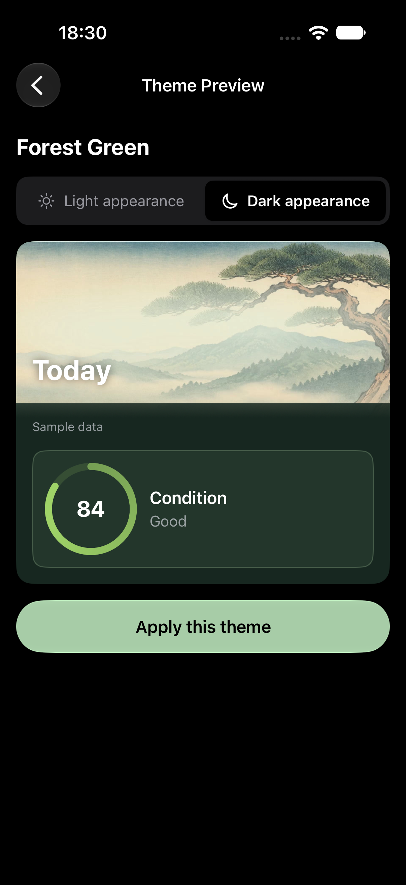

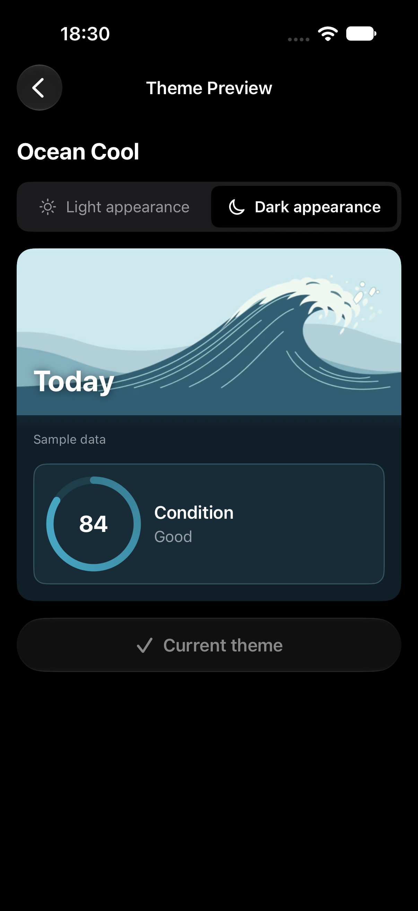

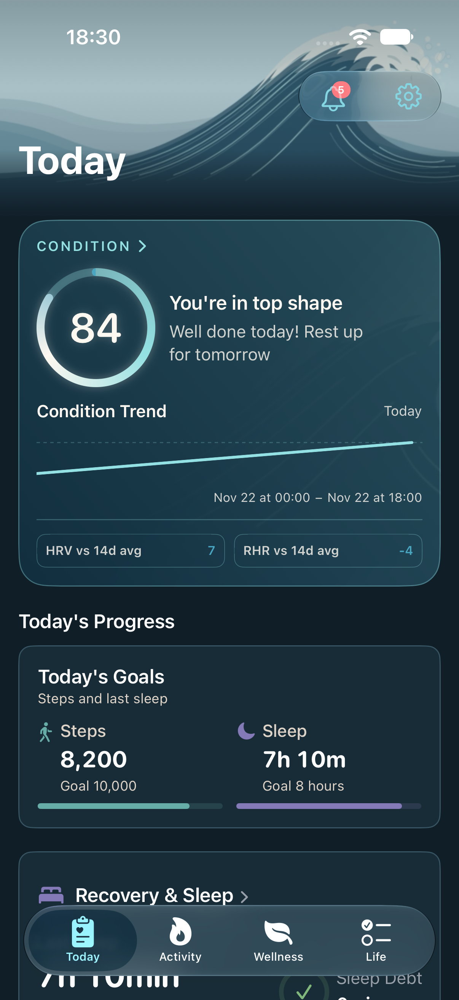

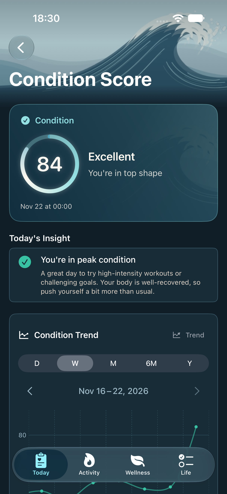
iPad mini

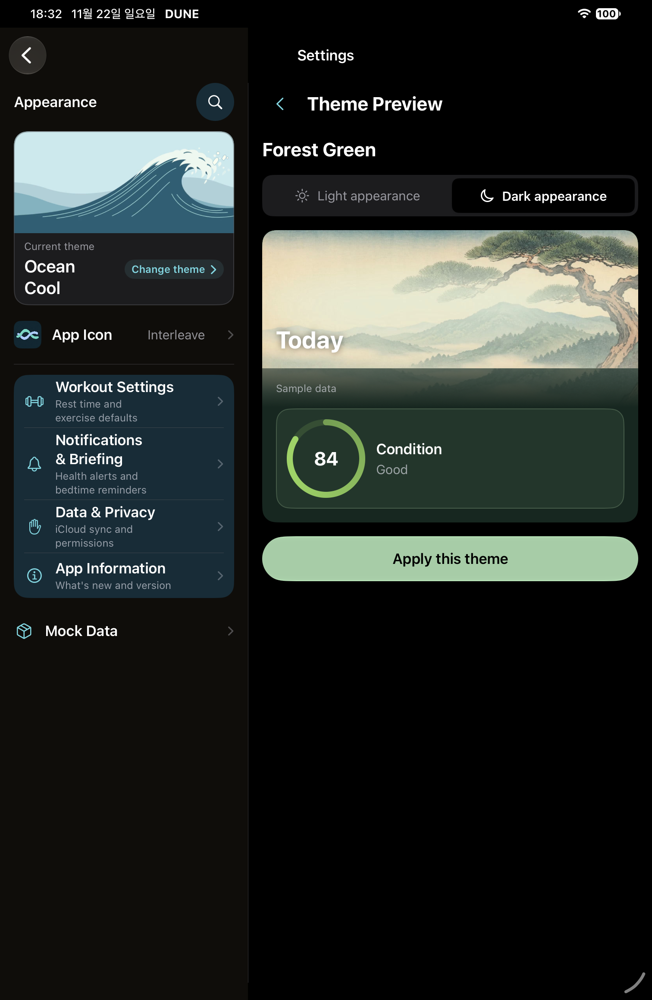

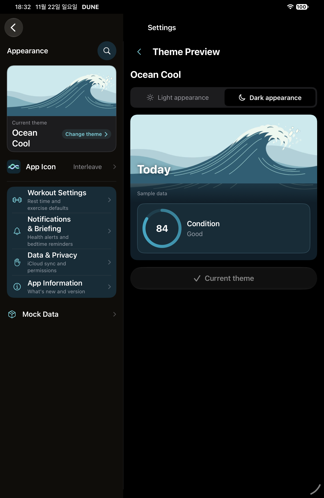

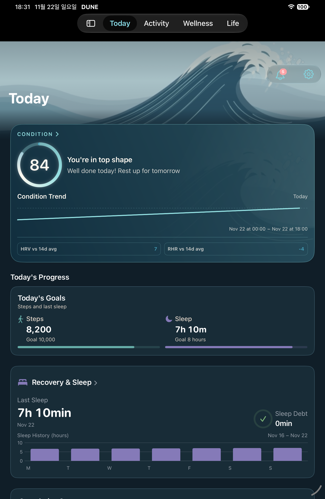

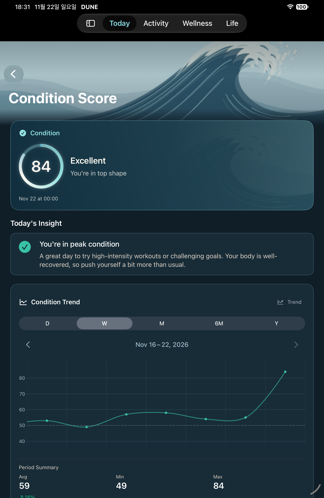
Duo는 활성 디스플레이, 앱 창 크기와 원본 PNG를 대조했다. 외부 화면은 466×678pt, 내부 화면은 951×669pt였다. 이 SDK에서는 힌지 각도 조회를 지원하지 않아 각도 실측값은 비어 있다.
Duo 외부 화면

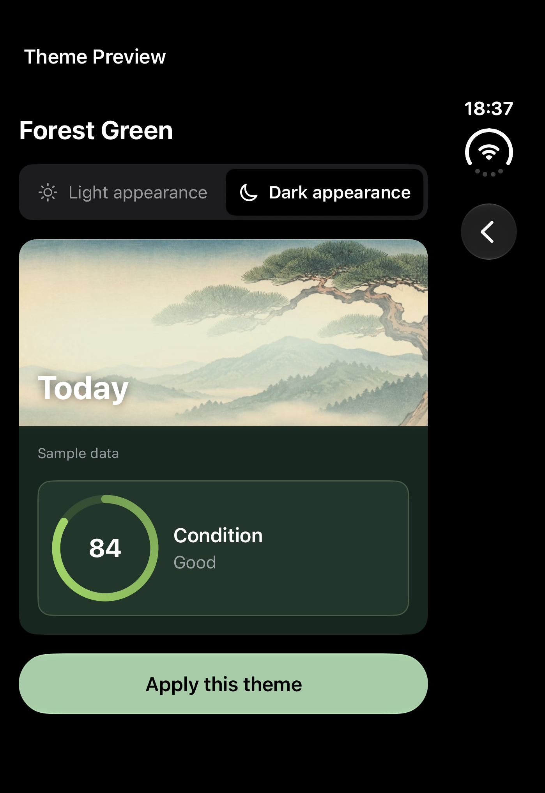

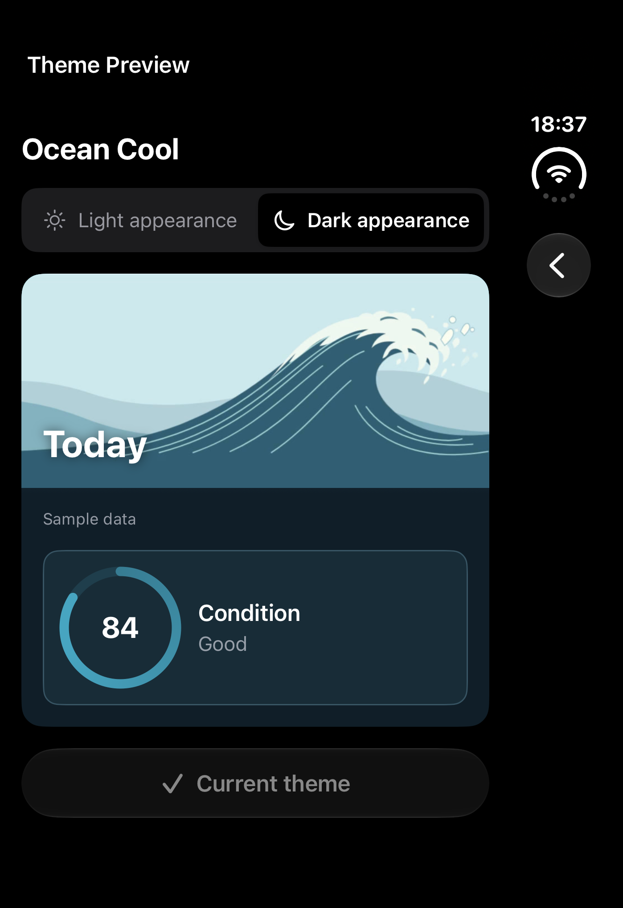

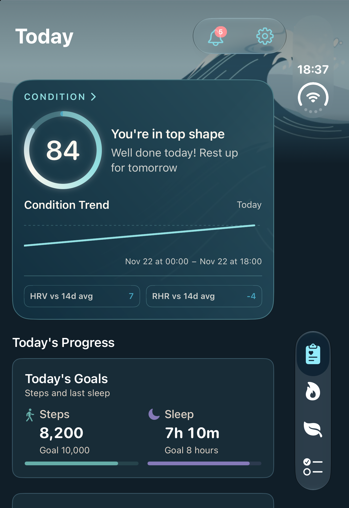

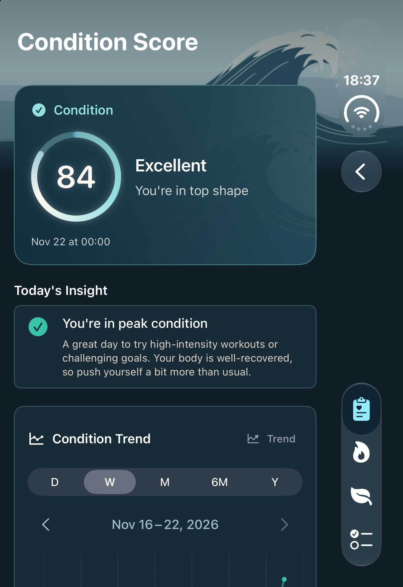
Duo 내부 화면

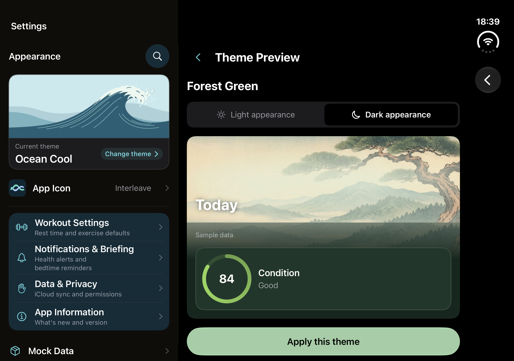

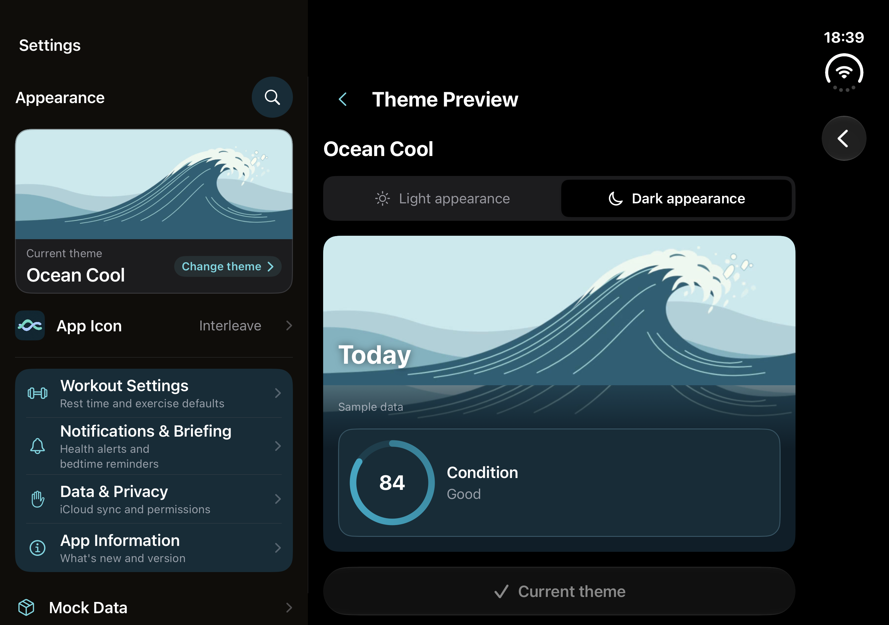

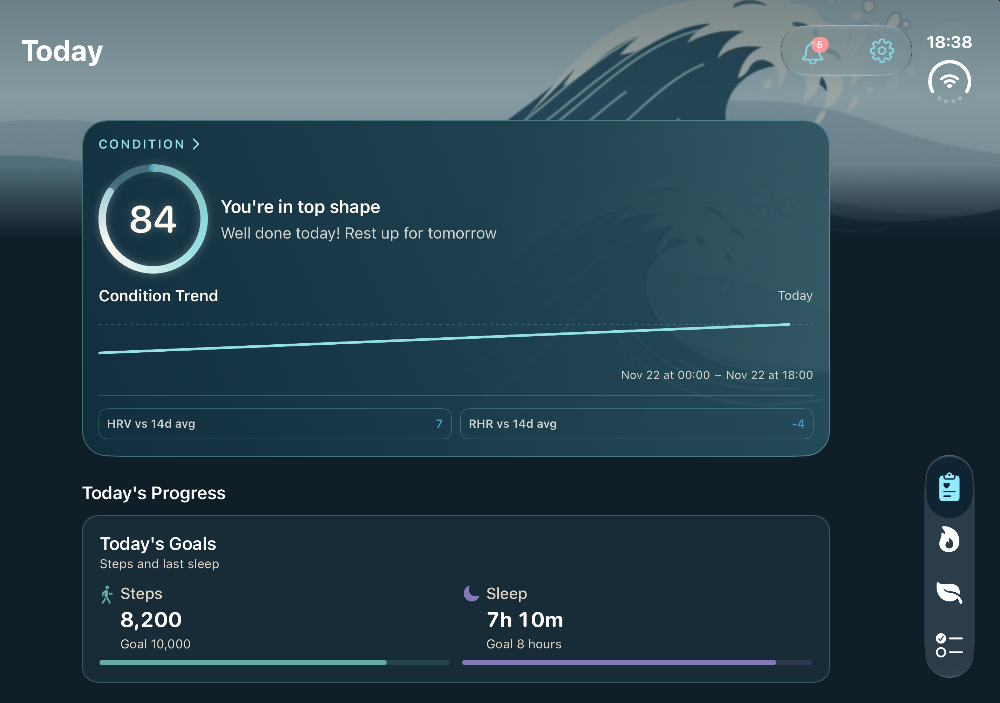

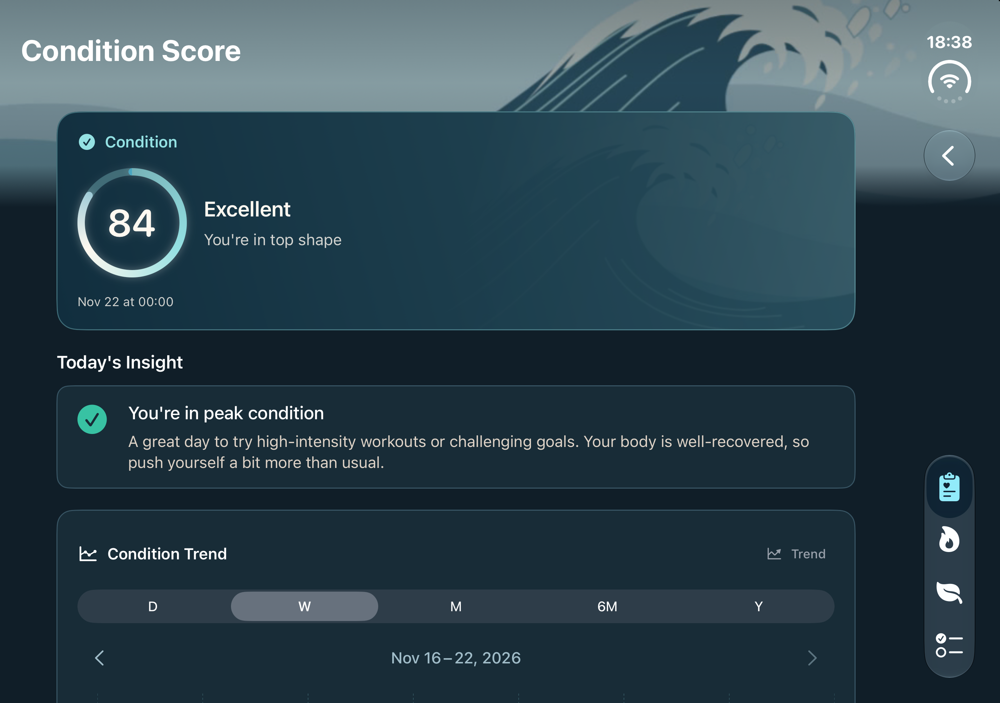